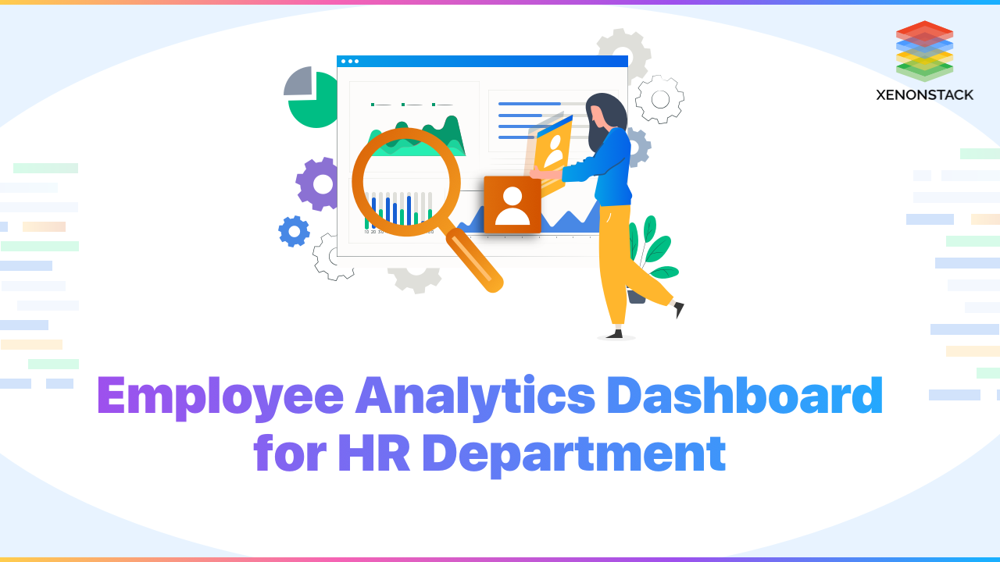

Excel,SQL,python,lookerstudio,Power Bi,Ms Word,Ms Presentation
This project was completed as part of my internship at Excelerate, where I worked as a Data Analyst Associate Intern. It was a team-based project in which we collaborated to analyze six datasets—five of which were interconnected, and one focusing on marketing data—to build an integrated dashboard. Every week, we submitted reports that were reviewed and evaluated by mentors, whose feedback helped us continuously improve the dashboard.

This project presents an interactive Inventory Management Dashboard built using Power BI, designed to provide actionable insights into stock levels, supplier performance, and product restocking trends. It helps businesses monitor stock availability, identify top-performing categories, analyze supplier lead times, and optimize restocking decisions.
Data analysis project focused on analyzing Amazon sales data to uncover trends and key insights. The analysis explores product performance, sales patterns over time, and other key metrics to support strategic decision-making.
This project involves a comprehensive analysis of Netflix's movies and TV shows data using SQL. The goal is to extract valuable insights and answer various business questions based on the dataset. The following README provides a detailed account of the project's objectives, business problems, solutions, findings, and conclusions.
This project presents a dynamic and interactive Excel dashboard created to analyze and visualize the sales performance of an e-commerce business. It helps decision-makers understand trends in revenue, profit, and customer behavior across different regions, product categories, and time periods.

This project showcases an end-to-end data analysis solution, from data cleaning to interactive visualization. The goal was to analyze the performance of Toman Bike Share, transforming raw data into a dynamic Power BI dashboard that reveals key business trends and supports strategic decision-making.

This project focused on designing and developing a dynamic, insights-driven Pizza Sales Dashboard to analyze year-long transactional data for a pizza business. The goal was to help stakeholders monitor performance, understand customer buying behavior, and identify sales trends across different pizza categories and sizes.

To analyze employee attrition rates and identify key factors influencing turnover. To explore demographic trends such as age, gender, and education to support HR planning. To evaluate job satisfaction across departments and roles for actionable insights. To develop an interactive Power BI dashboard that enables strategic HR decision-making. To support retention strategies by uncovering patterns in employee behavior and satisfaction.
This project is designed to demonstrate SQL skills and techniques typically used by data analysts to explore, clean, and analyze retail sales data. The project involves setting up a retail sales database, performing exploratory data analysis (EDA), and answering specific business questions through SQL queries. This project is ideal for those who are starting their journey in data analysis and want to build a solid foundation in SQL.
I built an interactive Road Accident Dashboard using Microsoft Excel to analyze accident data across urban and rural areas for the years 2021 and 2022. This project enhanced my skills in data analysis, visualization, and storytelling.
.webp)
Insightful Job Portal Analysis: Uncovering hiring trends and user behavior using Tableau's dynamic data visualization.Visualizing job market trends through Tableau – my latest data analysis project.
Job portal analytics made clear with Tableau dashboards.